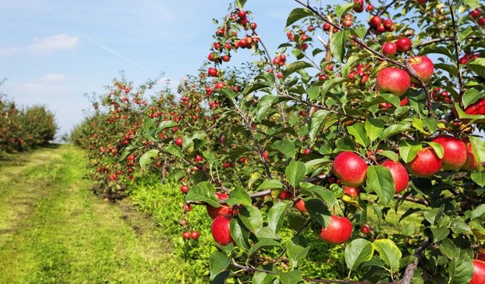
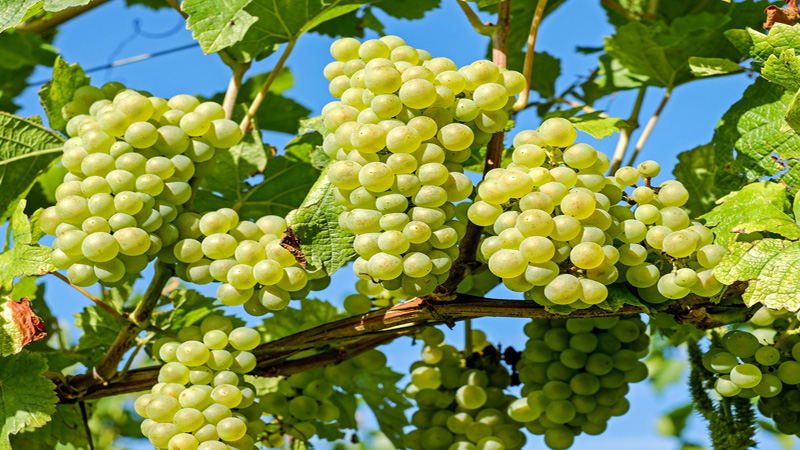
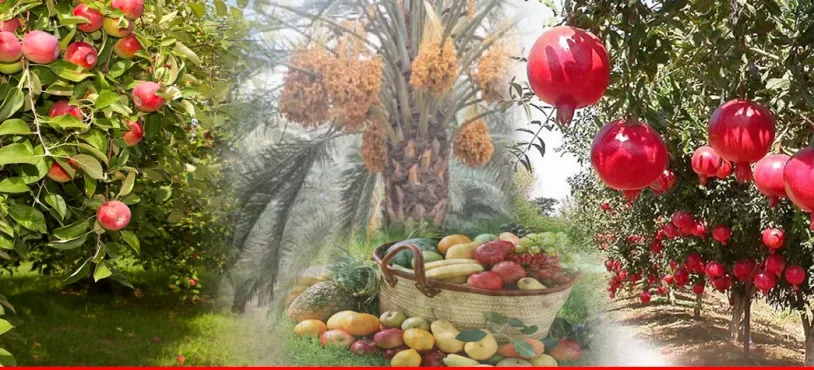

Some of the fruits that Quetta produces are apples, grapes, cherries, plums, peaches, apricots, almonds, and pomegranates. Quetta has a rich history and heritage, dating back to the ancient times. It was captured by the British in 1876, and became a major military station and administrative center.
  If you are looking for a travel destination that offers adventure, nature, and culture, you should consider visiting Quetta, the capital of Balochistan province in Pakistan. Quetta is a city of forts, fruits, and culture, surrounded by majestic mountain ranges and hills. It has a rich history and heritage, dating back to the ancient times. It has many attractions for tourists, such as museums, parks, bazaars, and historical buildings.

Quetta is also a gateway to access other beautiful and attractive valleys in the near vicinity, such as Pishin valley, Ziarat, and Chaman. You can also enjoy the natural beauty of Shaban valley and Pir Ghaib waterfall, and taste the delicious cuisine of Quetta. Quetta is a vibrant and lively metropolis with a mix of different ethnic groups and languages. The people of Quetta are hospitable and friendly, and celebrate various festivals and events throughout the year. Quetta is a must-visit destination for anyone who loves adventure, nature, and culture. Quetta is located at a distance of 691 km from Karachi, the largest city in Pakistan. The word Quetta comes from Pashto word Kwatkot, meaning fort, because of its geographical structure. It borders Afghanistan and Iran, making it a hub of trade and culture. Quetta has a population of about 2.3 million people, according to the 2017 census. Quetta is surrounded by four mountain ranges and hills named Chiltan, Takatoo, Murdar, and Zarghun. There are many valleys in these mountain ranges and small rivers flow inside these valleys. Quetta city is also known as the fruit garden of Pakistan, because of its abundant production of fruits and dry fruits. According to the Pakistan Bureau of Statistics, Balochistan province produces about 34% of the total fruits and 70% of the total dry fruits in Pakistan. Some of the fruits that Quetta produces are apples, grapes, cherries, plums, peaches, apricots, almonds, and pomegranates. Quetta has a rich history and heritage, dating back to the ancient times. It was captured by the British in 1876, and became a major military station and administrative center. Sir Robert Sandeman constructed his residency and army station that is the center of the Quetta city. Army Command and Staff College was opened to train the British army in 1907. Quetta played a vital role in the colonial era and witnessed many historical events such as the Anglo-Afghan wars, the Indian independence movement, and the creation of Pakistan.Quetta has many attractions for tourists, such as museums, parks, bazaars, and historical buildings.Some of the famous places to visit in Quetta